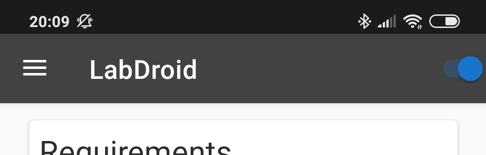

IDE
Access
LabDroid is shipped with an inbuild IDE based on web technologies. This allows you to prepare your projects from your PC, MAC or any other platform which supports Google Chrome. Of course you can also try to use Firefox or any other browser but at the moment it's impossible for me to check all browsers. If possible please use the latest version of Google Chrome or Chromium.
To get started you first need to activate the LabDroid service through the toggle in the top right corner.
After this you should get a notification which shows your the URL (http://PHONE_IP:8080) to open the IDE. Just open this page on another device which is in the same network.

Your first project
Next steps
Now you are able to start using LabDroid. Further information about the nodes can be founded on this page. Just select the section of your interest on the left side.
Script Node
Basics
LabDroid provides a script node which is powered by V8 from Google. Before we start with the technical things I would like to give
some credits to Ian Bull the founder of J2V8: Great job! :)
With the help of J2V8 you get a full-size JavaScript interpreter which is even optimized for Android. Beside of the API extensions
LabDroid offers you can get use of all inbuild namespaces like Date, JSON, Math, RegExp and much more.
For LabDroid I implemented some additional functions which will be explained in the following section.
API
Receives an object via the input port from the conected node.
| Parameters | |
|---|---|
| port | The number to address the wanted input port. Starting from 0 for the first one. |
| Returns | |
|---|---|
| any | The object which was received through the corresponding input port. |
Send an object via the output port to the connected node.
| Parameters | |
|---|---|
| port | The number to address the wanted output port. Starting from 0 for the first one. |
| object | The data you like to send out. It's possobile to place any kind of data (e.g. string, number, array or a object). |
Enables you to pause the script node for some time.
| Parameters | |
|---|---|
| time | A number to force the script node to sleep/wait for the desired time (milliseconds). |
Returns the current system time of your phone, in nanoseconds.
NFC Node
Basics
NFC is a technologies which allows you to identify an object. Many plastic cards e.g. library card, public transport card, ..) are equiped with an RFID tag, which can be read out through this node.
Output
| Port | Object |
|---|---|
| 0 |
A string which contains the RFID tag. |
Accelerometer Node
Basics
The accelerometer reports the acceleration of the device along the three sensor axes. The measured acceleration includes both the physical acceleration (change of velocity) and the gravity.
All values are in SI units [m/s^2] and measure the acceleration of the device minus the force of gravity along the 3 sensor axes.
Output
| Port | Object |
|---|---|
| 0 |
{ "x": float [m/s^2], "y": float [m/s^2], "z": float [m/s^2] } |
GPS Node
Basics
GPS is one kind of a Global Navigation Satellite System (GNSS). The GPS node can be used to get the current position or speed of the device. Once the module collects enough satellite data to calculate an accurate position, it has a valid location (a fix ) that it can report.
Note: The first fix can take some time (up to a few minutes if the device is indoor).
Output
| Port | Object |
|---|---|
| 0 |
{ "accuracy": float, "altitude": float [m], "bearing": float [deg] "latitude": float "longitude": float "speed": float [m/s] } |
Gyroscope Node
Basics
The gyroscope reports the rate of rotation of the device around the three sensor axes. Rotation is positive in the counterclockwise direction (right-hand rule).
All values are in radians per second (rad/s).
Output
| Port | Object |
|---|---|
| 0 |
{ "x": float [rad/s], "y": float [rad/s], "z": float [rad/s] } |
Magnetometer Node
Basics
The magnetometer is used to measure the ambient magnetic field. The measurement is reported in the x, y and z fields.
All values are in micro-Tesla (uT).
Output
| Port | Object |
|---|---|
| 0 |
{ "x": float [uT], "y": float [uT], "z": float [uT] } |
Vibrator Node
Basics
The Vibrator is used to generate a haptic feedback. One of the most common usage is to notifiy the user about new messages.
Input
This node supports default values. This means that you don't need to send all parameters to the input. If one or more is missing the mode will automatically use the default values.
| Port | Object |
|---|---|
| 0 |
{ "power": float [0.01-1.0 %], "time": int [1-1000 ms] } |